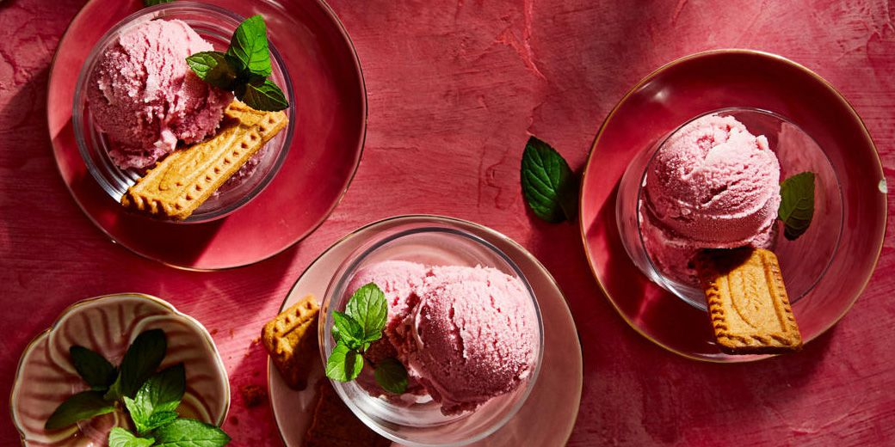

Amphitheatrum Flavium
Home
Events
Menu
About
Location
Contact/Review
Appetizers (Gustatio)
#
Dish
Description
Price
1
Moretum
A cheese and herb spread, made from fresh cheese, garlic, herbs, and olive oil, served with bread.
10 Denarii
2
Ovum in Patina
Soft scrambled eggs with herbs, cooked in a shallow dish.
8 Denarii
3
Patina de Apicius
A savory pie made with minced meat, egg, and herbs.
12 Denarii
4
Cucumis et Melon
A salad of cucumbers and melons, dressed with honey and vinegar.
7 Denarii
5
Fritillus
Fried small fish, seasoned with salt and herbs, served as finger food.
6 Denarii
6
Isicia Omentata
Roman-style meatballs made with minced meat, pepper, and wine-soaked bread, served in a rich sauce.
15 Denarii
7
Olives and Cheese Platter
A mix of olives, served with cheeses such as sheep’s milk cheese and Pecorino.
9 Denarii
8
Mustum de Vitis
Fresh grape juice served with nuts like hazelnuts and walnuts.
5 Denarii
9
Lucanica Sausages
Spicy sausages made with ground pork, pepper, and wine, served with bread crumbs.
14 Denarii
10
Gustum de Ciceris
A dip made from chickpeas, garlic, olive oil, and vinegar, eaten with bread or vegetables.
7 Denarii
Main Dishes (Primae Mensae)
#
Dish
Description
Price
1
Boiled Dormice (Glirum) in Honey and Spices
Dormice stuffed with meat, nuts, and spices, served with honey sauce.
25 Denarii
2
Carne ius
A hearty meat stew made from lamb, onions, garlic, wine, and garum (fermented fish sauce).
18 Denarii
3
Baked Fish with Herbs
Fish like perch or mullet, seasoned with thyme, dill, and parsley, baked in a clay pot.
20 Denarii
4
Lentil Porridge with Sausages
Lentils cooked with garlic, herbs, and Roman sausages, often served with bread.
12 Denarii
5
Patina de Porco
A pork casserole with apples, herbs, and honey, cooked in a shallow pan.
22 Denarii
6
Pulmentarium de Gallina
Chicken and vegetable stew, seasoned with rosemary, garlic, and olive oil.
16 Denarii
7
Gustus de Porco
Pork, roasted or braised, served with a sauce made from vinegar, honey, and garum.
19 Denarii
8
Legumina et Holus
A vegetable medley of seasonal legumes and greens, dressed in olive oil and vinegar.
10 Denarii
9
Panis et Caseus Cum Fructus
Bread with fresh cheeses and figs, combining sweet and savory flavors.
13 Denarii
10
Agnus de Lenticulis
Lamb stew cooked with lentils, garlic, onions, and spices like cumin and coriander.
23 Denarii
Desserts (Secundae Mensae)
#
Dish
Description
Price
1
Libum
A honey cake made with cheese and flour, sweetened with honey and baked to a golden brown.
14 Denarii
2
Fruits in Honey and Wine
Seasonal fruits like figs, grapes, and pomegranates marinated in honey, wine, and spices.
12 Denarii
3
Patina de Malis
A baked apple dessert with honey, nuts, and cinnamon.
11 Denarii
4
Aliter Dulcia
A pudding made with flour, honey, and milk, flavored with rosewater or orange flower.
15 Denarii
5
Ova Spongia Exsudantia
A honeyed sponge cake, soaked in sweet wine and topped with fresh fruit.
18 Denarii
6
Dulcia Domum
Roman-style jelly made from fruit juices, sweetened with honey.
9 Denarii
7
Sorbets from Fruit Juices 
Sorbets made from fruit juices like pomegranate, quince, or pear, chilled and served.
13 Denarii
8
Dulcia Melone
Melon slices drizzled with sweet syrup or honey.
7 Denarii
9
Datiles et Nuces
Dates and walnuts, often served with wine or wine vinegar.
10 Denarii
10
Sweets with Milk and Almonds
A creamy almond-based dessert made with milk and sugar, topped with pistachios.
16 Denarii